Data Structures
Why one variable per value stops working
So far you have worked with individual values: name = "Rahul", age = 21, marks = 85. You can also take input, perform calculations, make decisions using conditions, and display the result.
Now a different problem. A teacher wants to store the marks of five students: 85, 72, 91, 68 and 79. How can you store all these marks in Python? Let’s try to solve the problem. One way is a separate variable for every student:
marks1 = 85
marks2 = 72
marks3 = 91
marks4 = 68
marks5 = 79
print(marks1)
print(marks2)
print(marks3)
print(marks4)
print(marks5)85
72
91
68
79It works. But with 100 students you’d need marks1 … marks100, which is clearly not practical. And how would the teacher add a student’s marks, remove one, check whether a mark exists, get the third student’s marks, or count how many are stored? We need a way to store multiple related values together.
Think about how we organise things in real life
marks = [85, 72, 91, 68, 79]Python has four built-in data structures (collections) for this, each solving a slightly different problem:
List [ ]
An ordered collection you can change.
Tuple ( )
An ordered collection that can’t change.
Dictionary {k: v}
Values looked up by a meaningful key.
Set { }
Unique values only, no duplicates.
Lists: creating and reading them
A list stores multiple values together in a single variable. Use one whenever several values belong together and are handled as a group:
marks = [85, 72, 91, 68, 79] # student marks
shopping_items = ["Milk", "Bread", "Eggs", "Rice"] # shopping items
fruits = ["Apple", "Banana", "Mango", "Orange"] # fruits
employees = ["Rahul", "Priya", "Amit", "Sneha"] # employee namesCreating a list
Put comma-separated values inside square brackets [ ]:
list_name = [value1, value2, value3]shopping_items = ["Milk", "Bread", "Eggs", "Rice"]
print(shopping_items)['Milk', 'Bread', 'Eggs', 'Rice']A list can mix data types
student = ["Rahul", 21, 85.5, True]
print(student)['Rahul', 21, 85.5, True]"Rahul" is a string, 21 an integer, 85.5 a float and True a Boolean, all happily in one list. In practice, though, a list usually holds values of the same kind, like marks = [85, 72, 91, 68, 79].
Accessing elements by index
To get just 91 out of marks, you need to identify where that value is located. Lists use an index to identify each element:
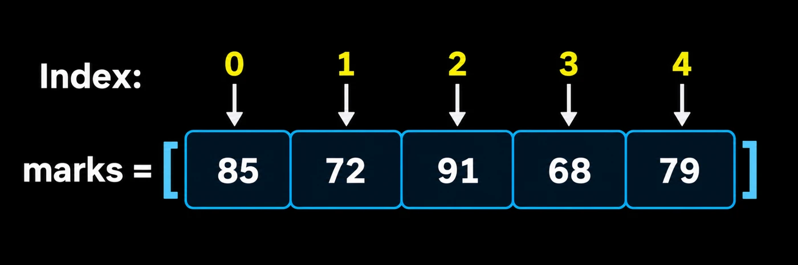
Like strings, indexing starts at 0, not 1: 85 is index 0, 72 is index 1, 91 is index 2, 68 is index 3, 79 is index 4. So to get 91 you don’t ask for “the third value”, you ask for the value at index 2.
list_name[index]marks = [85, 72, 91, 68, 79]
print(marks[0]) # first student
print(marks[2]) # third student85
91Negative indexing
-1 is the last item, -2 the second-last, and so on. A banking app showing the most recent transaction:
transactions = [500, -200, 1500, -750]
print("Latest transaction:", transactions[-1])Latest transaction: -750marks[5] on a 5-item list raises IndexError: list index out of range. The last index is always len(list) - 1.Modifying an element
Now suppose the student’s mark was entered incorrectly: the second student’s 72 should have been 75. You don’t need a new list; just assign to that index:
marks = [85, 72, 91, 68, 79]
marks[1] = 75
print(marks)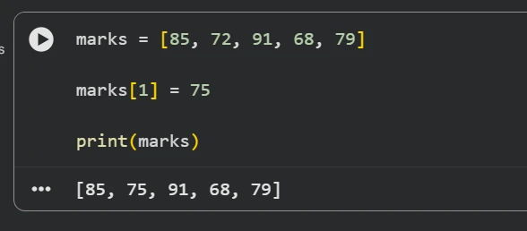
This shows an important idea: lists are mutable, which means their elements can be changed after the list is created. (Strings, remember, are immutable.) Visually:
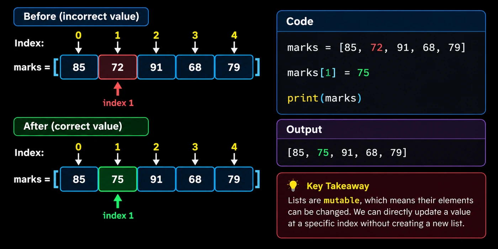
Growing, shrinking and searching a list
| Operation | What it does |
|---|---|
lst.append(x) | Adds x to the end |
lst.insert(i, x) | Inserts x at index i; later items shift right |
lst.remove(x) | Removes the first item equal to x |
lst.pop(i) | Removes and returns the item at index i (the last item if no index) |
x in lst | True if x is in the list |
lst.index(x) | Position of the first x |
len(lst) | Number of items |
Adding at the end: append()
A new student joins and scores 88:
marks = [85, 75, 91, 68, 79]
marks.append(88)
print(marks)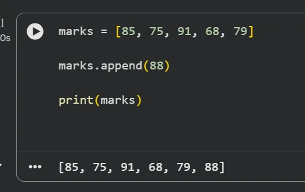
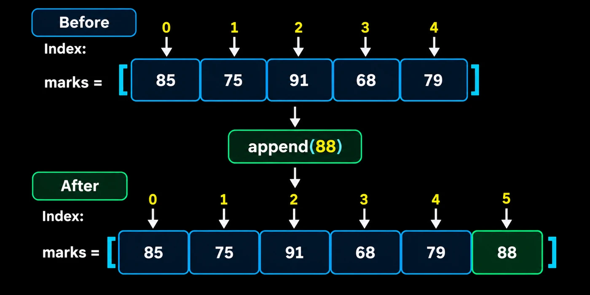
append() adds an element to the end of the list.Adding at a position: insert()
Put “Banana” between “Apple” and “Mango”:
fruits = ["Apple", "Mango", "Orange"]
fruits.insert(1, "Banana")
print(fruits)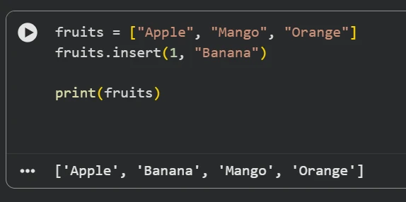
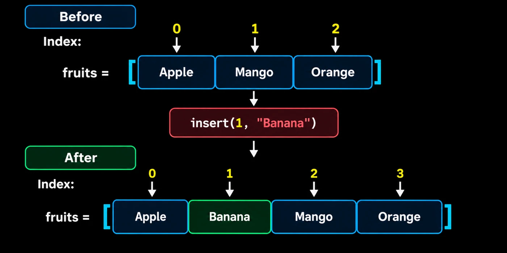
Notice that insert() doesn’t overwrite anything: Mango and Orange simply shift one position to the right to make room for Banana at index 1.
Removing by value: remove()
fruits = ["Apple", "Banana", "Mango", "Orange"]
fruits.remove("Banana")
print(fruits)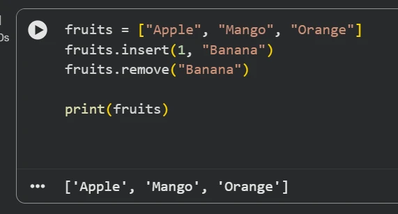
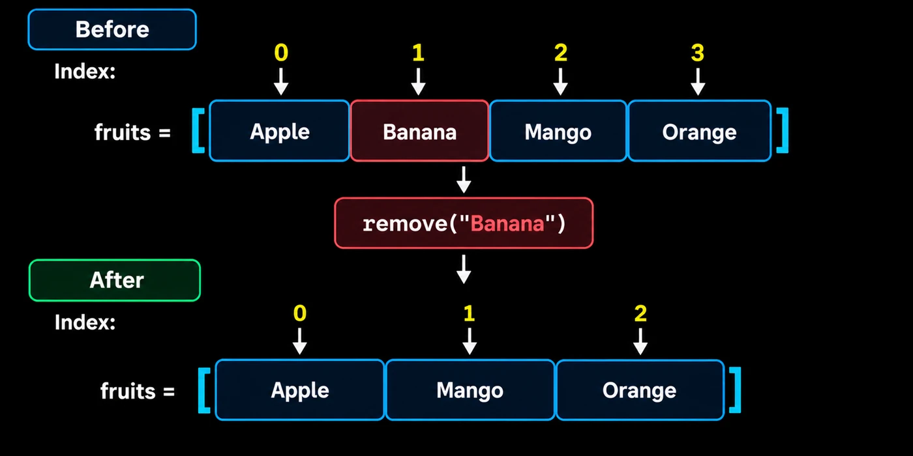
Removing by position: pop()
When you know the position rather than the value, use pop(). Remove the element at index 2:
fruits = ["Apple", "Banana", "Mango", "Orange"]
fruits.pop(2)
print(fruits)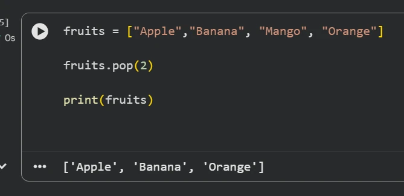
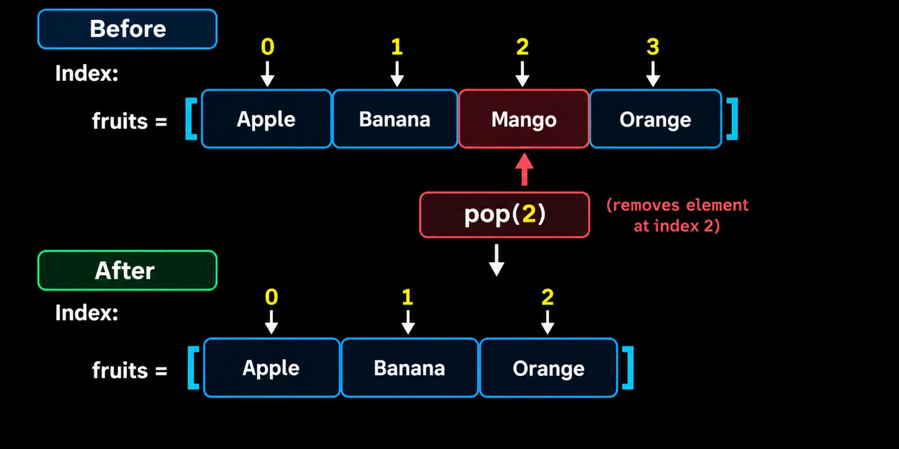
pop(2) removes whatever sits at index 2.pop() also hands back the removed item, and with no index it removes the last one:
fruits = ["Apple", "Banana", "Mango", "Orange"]
print(fruits.pop(2))
print(fruits)
numbers = [10, 20, 30, 40]
removed = numbers.pop() # no index: removes the last item
print(removed)
print(numbers)Mango
['Apple', 'Banana', 'Orange']
40
[10, 20, 30]Finding elements: in
Is “Mango” present in the list? The in operator answers with True or False:
fruits = ["Apple", "Banana", "Mango", "Orange"]
print("Mango" in fruits)
print("Grapes" in fruits)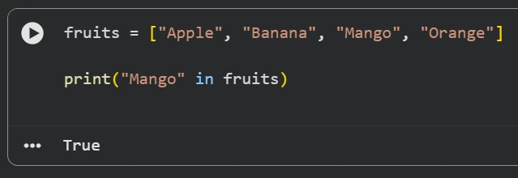
True.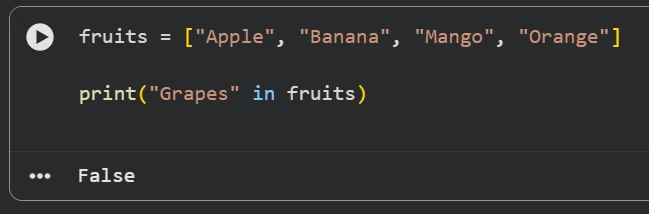
False.Finding the position: index()
Sometimes you want to know not just whether an element exists, but where it is:
fruits = ["Apple", "Banana", "Mango", "Orange"]
print(fruits.index("Mango"))Finding the length: len()
How many students are in the list? Use the built-in function len():
students = ["Rahul", "Priya", "Amit", "Sneha"]
print(len(students))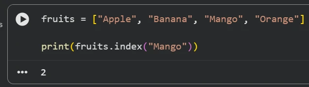
index(): Mango sits at index 2.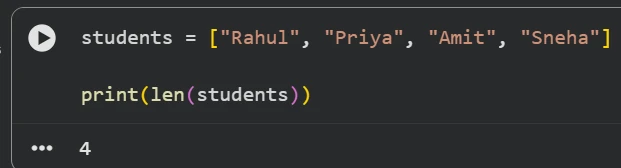
len(): 4 students.len() is not the last index len() counts items (4 here); the last index is 3. Also note: remove() and index() raise ValueError if the value isn’t in the list, so check with in first when unsure.Real-world practice
Online shopping cart: add “Webcam”, remove “Mouse”, print the cart.
cart = ["Laptop", "Mouse", "Keyboard", "Headphones"]
cart.append("Webcam")
cart.remove("Mouse")
print(cart)['Laptop', 'Keyboard', 'Headphones', 'Webcam']Food delivery orders: add an order of 450, remove the 320 one, count the orders.
orders = [250, 480, 320, 150, 600]
orders.append(450)
orders.remove(320)
print(len(orders))5Movie watchlist: is “Avatar” there, where is “Interstellar”, and add “The Dark Knight”.
watchlist = ["Inception", "Avatar", "Interstellar", "Titanic"]
print("Avatar" in watchlist)
print(watchlist.index("Interstellar"))
watchlist.append("The Dark Knight")
print(watchlist)True
2
['Inception', 'Avatar', 'Interstellar', 'Titanic', 'The Dark Knight']Bank transactions: show the latest, remove it, show the rest.
transactions = [5000, -1200, 2500, -800, 3000]
print("Latest transaction:", transactions[-1])
transactions.pop()
print(transactions)Latest transaction: 3000
[5000, -1200, 2500, -800]Tuples: collections that can’t be changed
With lists you can access, modify, add, remove and search values. But now a different problem. Suppose you are building a student profile system, and each student has some basic information: a name, age and roll number. These values belong together because they describe one student. A list works: student = ["Rahul", 21, 101]. But think carefully: should these values be changed accidentally? student[1] = 25 silently changes the age. Some data should not change by accident: coordinates of a location, RGB colour values, days of the week, a database record. For that, Python has the tuple.
A tuple stores multiple values together, like a list, with one key difference: a tuple cannot be modified after it is created.
student = ("Rahul", 21, 101)Three values stored together:
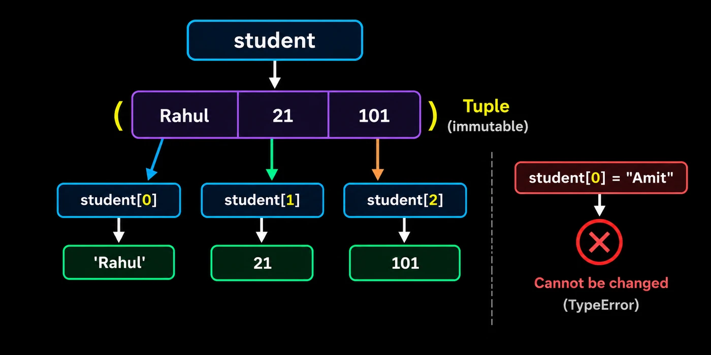
TypeError.Creating a tuple
tuple_name = (value1, value2, value3)weekend = ("Saturday", "Sunday")
print(weekend)
student = (101, "Rahul", 85.5) # roll number, name, percentage
print(student)
student = ("Rahul", 21, 85.5, True) # mixed types are fine
print(student)('Saturday', 'Sunday')
(101, 'Rahul', 85.5)
('Rahul', 21, 85.5, True)The single-element trap
Parentheses alone don’t make a tuple; the comma does:
value = (10)
print(type(value))
value1 = (10,)
print(type(value1))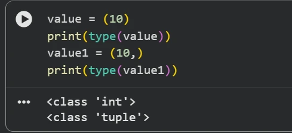
int. With a comma: a tuple.(10) is just the number 10 in brackets, like (2 + 3): Python treats it as a normal integer expression. (10,) is a one-item tuple.
Accessing elements
Tuples use indexing exactly like lists. To get “Mango”:
fruits = ("Apple", "Banana", "Mango", "Orange")
print(fruits[2])Negative indexing
Tuples also support negative indexing. The last element is -1:
fruits = ("Apple", "Banana", "Mango", "Orange")
print(fruits[-1])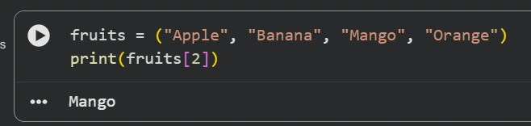
fruits[2] → Mango.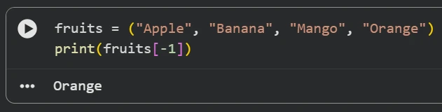
fruits[-1] → Orange, the last item.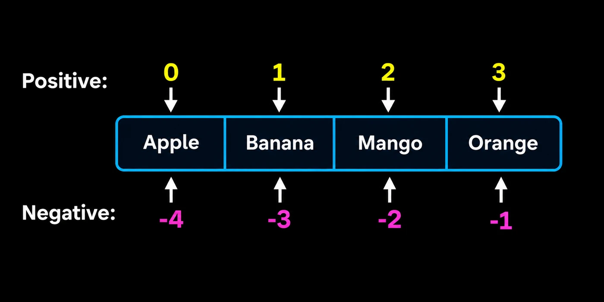
-1 always refers to the last item, -2 to the second-last, and so on, exactly as with lists.
weekdays = ("Mon", "Tue", "Wed", "Thu", "Fri")
print(weekdays[-1])FriImmutability: the important difference
fruits = ("Apple", "Banana", "Mango")
fruits[1] = "Orange"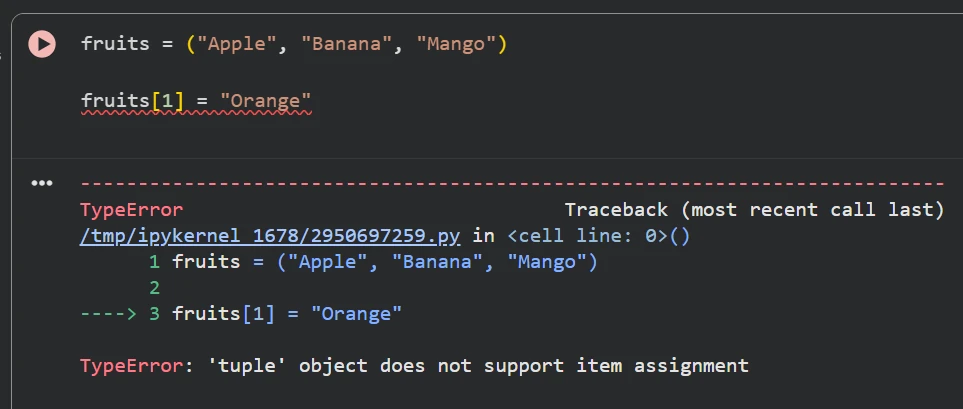
TypeError.numbers = (10, 20, 30)
numbers.append(40)AttributeError: 'tuple' object has no attribute 'append'Tuples have no append(), insert(), remove() or pop(). Whatever values a tuple is built with, it keeps for its whole lifetime. If you need different values, create a new tuple:
# WRONG - tuples cannot be changed
# numbers[1] = 25 -> TypeError
# numbers.append(40) -> AttributeError
# CORRECT - create a new tuple instead
numbers = (10, 25, 30)
print(numbers)(10, 25, 30)A practical example: a point on a graph
A point on a 2D graph is represented by two values, the X coordinate and the Y coordinate:
point = (10, 20)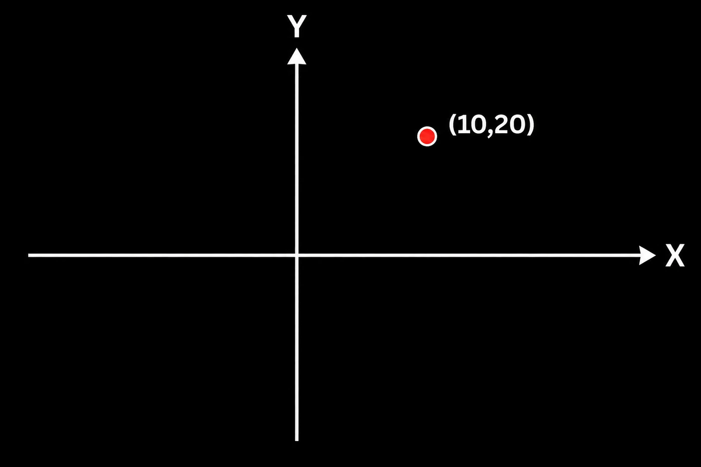
print(point[0])
print(point[1])10
20A point is a natural tuple: x and y only mean something as a fixed pair, and nothing should ever add a third value or swap one out.
Packing and unpacking
Packing means putting several values into one tuple: student = ("Rahul", 21, 101).
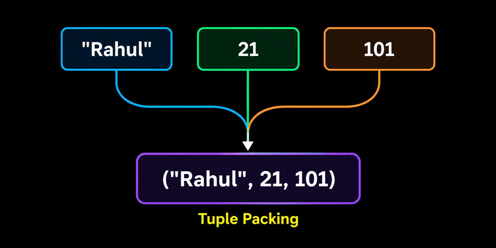
The parentheses are optional in many tuple-packing situations. Python automatically creates a tuple:
student = "Rahul", 21, 101
type(student) # a notebook displays the last expression's value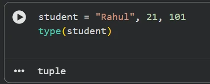
tuple.Unpacking takes the values back out into separate variables in one line:
student = ("Rahul", 21, 101)
name, age, roll_number = student
print(name)
print(age)
print(roll_number)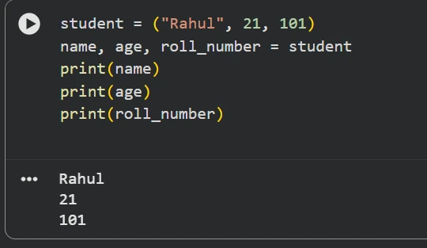
name, age, roll_number = student: values are matched by position.So:
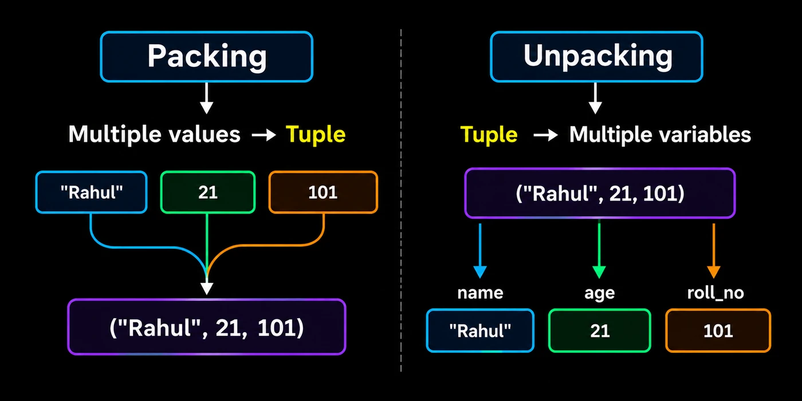
a, b = (1, 2, 3) fails with ValueError: too many values to unpack (expected 2, got 3). You already used unpacking in Part 1: name, age = "Rahul", 21 is packing and unpacking in one line.What you can do with a tuple
Although tuples cannot be modified, you can still access, check membership, find and count:
numbers = (10, 20, 30, 40)
print(numbers[2]) # access30numbers = (10, 20, 30, 40)
print(20 in numbers) # checking membership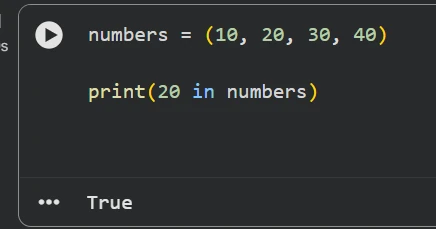
print(numbers.index(30)) # finding an element: 2
print(len(numbers)) # finding length: 42
4Real-world practice
location = (20.2961, 85.8245) # GPS latitude, longitude
print("Latitude:", location[0])
print("Longitude:", location[1])
product = (101, "Laptop", 55000) # product ID, name, price
print("Product Name:", product[1])
print("Price:", product[2])
product_id, name, price = product
print(product_id)
print(name)
print(price)Latitude: 20.2961
Longitude: 85.8245
Product Name: Laptop
Price: 55000
101
Laptop
55000student = (101, "Rahul", 21, 85.5) # roll number, name, age, percentage
print(101 in student)
print("Percentage:", student[3])
transaction = (1001, "Credit", 5000) # transaction ID, type, amount
print("Amount:", transaction[2])
transaction_id, transaction_type, amount = transaction
print("Transaction ID:", transaction_id)
print("Type:", transaction_type)
print("Amount:", amount)True
Percentage: 85.5
Amount: 5000
Transaction ID: 1001
Type: Credit
Amount: 5000Dictionaries: look things up by name
A student has a name (Rahul), age (21), roll number (101) and course (Python). Separate variables explode with 100 students (student1_name, student1_age, …). This quickly becomes difficult to manage. So we might think: “Can we store all the information about one student together?” A list keeps them together:
student = ["Rahul", 21, 101, "Python"]
print(student[1])21But what does student[1] mean? Everyone reading the code has to remember that 0 is name, 1 is age, 2 is roll number, 3 is course. With seven fields (city, marks, grade…) you’d be memorising seven position numbers. It would be far better to ask for a value by a meaningful name.
A dictionary stores data as key-value pairs: key → value. Instead of student[1] you write student["age"].
You can visualise it like this:
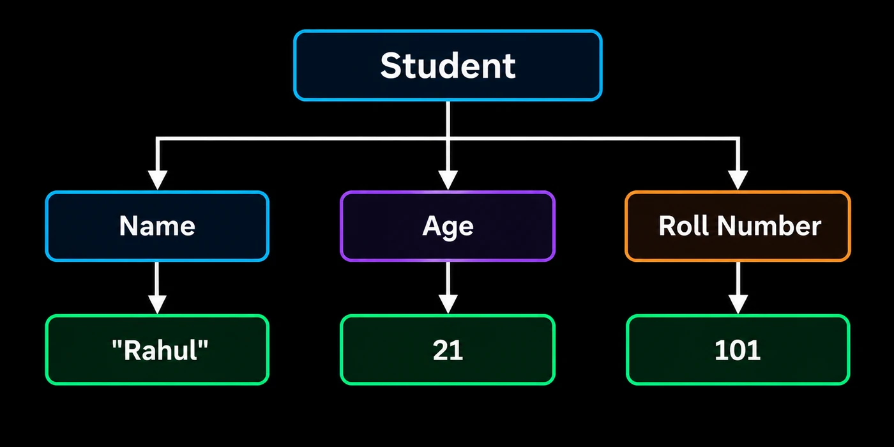
Creating a dictionary
Curly braces { }, with key: value pairs separated by commas:
dictionary_name = {
key1: value1,
key2: value2,
key3: value3
}student = {
"name": "Rahul",
"age": 21,
"roll_number": 101,
"course": "Python"
}
print(student){'name': 'Rahul', 'age': 21, 'roll_number': 101, 'course': 'Python'}Far more descriptive than ["Rahul", 21, 101, "Python"].
Accessing values by key
A list uses an index, student[0]; a dictionary uses the key, student["name"]:
student = {
"name": "Rahul",
"age": 21,
"roll_number": 101,
"course": "Python"
}
print(student["name"])
print(student["age"])
print(student["course"])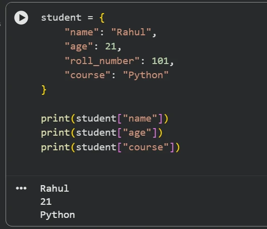
student["city"] on a dictionary without that key fails with KeyError: 'city'. Check with in first, or use student.get("city"), which returns None (or a default you pass, like student.get("city", "Unknown")) instead of crashing.Adding and updating
Assigning to a key adds it if it’s new, and updates it if it already exists:
The student dictionary has no city yet. Add a new key-value pair:
student = {
"name": "Rahul",
"age": 21,
"roll_number": 101
}
student["city"] = "Bhubaneswar" # new key: added
print(student)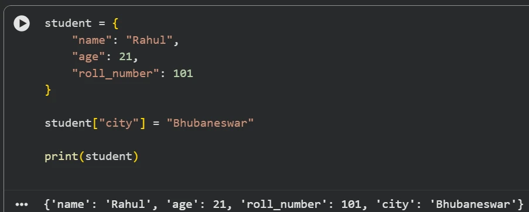
Now the student’s age changes from 21 to 22. Use the same key:
student = {
"name": "Rahul",
"age": 21
}
student["age"] = 22 # existing key: updated
print(student)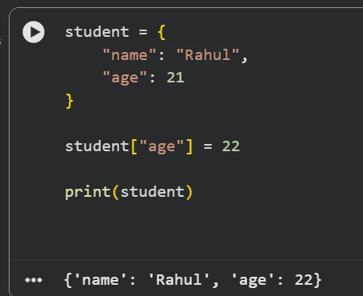
Removing with pop()
student = {
"name": "Rahul",
"age": 21,
"city": "Bhubaneswar"
}
student.pop("city")
print(student)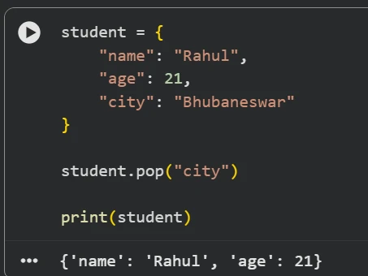
Like a list’s pop(), it also returns the removed value ("Bhubaneswar" here).
Does a key exist?
in checks the keys (not the values):
student = {
"name": "Rahul",
"age": 21,
"course": "Python"
}
print("course" in student)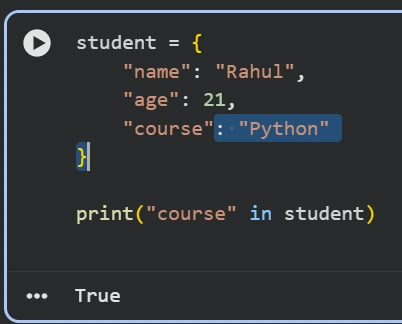
"course" exists.Because in looks at keys, print("Rahul" in student) prints False: “Rahul” is a value, not a key.
Combining dictionaries with conditional statements
This is a good point to connect with the previous topic, Control Flow:
student = {
"name": "Rahul",
"marks": 85
}
if "marks" in student:
print("Marks are available")
else:
print("Marks are not available")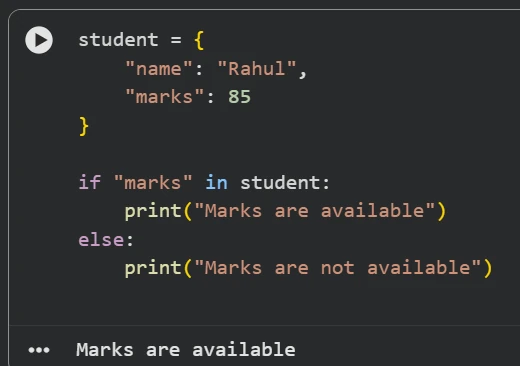
if branch runs.keys(), values() and items()
keys() gives all the keys, values() all the values, and items() the keys and values together. You can loop over each:
student = {
"name": "Rahul",
"age": 21,
"course": "Python"
}
for key in student.keys():
print(key)for value in student.values():
print(value)for key, value in student.items():
print(key, ":", value)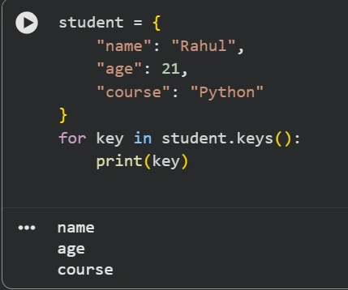
keys()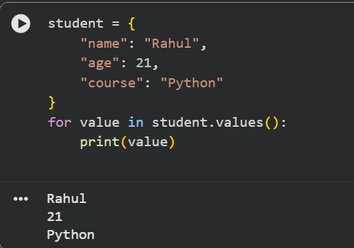
values()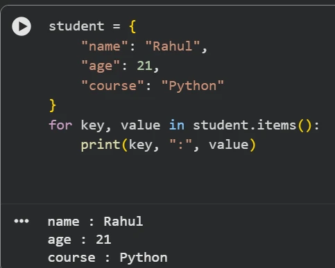
items()items() hands out (key, value) pairs, which the loop unpacks into two variables, just like enumerate().
Real-world practice
Hospital appointment: change the time, confirm the doctor, show everything.
appointment = {
"patient": "Amit",
"doctor": "Dr. Sharma",
"date": "15 October",
"time": "10:00 AM"
}
appointment["time"] = "11:30 AM"
if "doctor" in appointment:
print("Doctor:", appointment["doctor"])
for key, value in appointment.items():
print(key, ":", value)Doctor: Dr. Sharma
patient : Amit
doctor : Dr. Sharma
date : 15 October
time : 11:30 AMFlight booking: add a seat, update the status.
flight = {
"passenger": "Priya",
"flight_number": "AI202",
"destination": "Delhi",
"status": "Scheduled"
}
flight["seat"] = "12A"
flight["status"] = "Boarding"
for key, value in flight.items():
print(key, ":", value)passenger : Priya
flight_number : AI202
destination : Delhi
status : Boarding
seat : 12ANotice status kept its original position when updated, and the new seat key went to the end: dictionaries remember insertion order.
Smart home and weather station:
home = {
"light": "Off",
"fan": "On",
"temperature": 24
}
home["light"] = "On"
home["temperature"] = 26
if "fan" in home:
print("Fan status:", home["fan"])
print(home)
weather = {
"city": "Bengaluru",
"temperature": 28,
"humidity": 65,
"condition": "Cloudy"
}
weather["temperature"] = 30
if "humidity" in weather:
print("Humidity:", weather["humidity"])
for key, value in weather.items():
print(key, ":", value)Fan status: On
{'light': 'On', 'fan': 'On', 'temperature': 26}
Humidity: 65
city : Bengaluru
temperature : 30
humidity : 65
condition : Cloudyresponse["status"], "error" in response and for k, v in response.items() will be in nearly every integration script you write.Sets: unique values only
You ask students which fruits they like and record every answer:
fruits = ["Apple", "Banana", "Apple", "Mango", "Banana", "Apple", "Orange"]Which fruits were mentioned, without repeats? The list keeps “Apple” three times and “Banana” twice; you’d need extra logic to strip duplicates. A set automatically keeps only unique values.
fruits = {"Apple", "Banana", "Apple", "Mango", "Banana", "Apple", "Orange"}
print(fruits)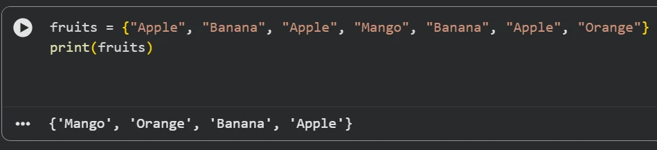
Notice the order doesn’t match what you typed. For sets of strings it can even change from one run to the next, so the set outputs on this page are one possible order; yours may differ. Sets are unordered: items have no fixed position and no index, so fruits[0] is a TypeError: 'set' object is not subscriptable.
Creating sets
Curly braces, like a dictionary, but plain values instead of key: value pairs:
set_name = {value1, value2, value3}colors = {"Red", "Green", "Blue"}
print(colors){'Blue', 'Red', 'Green'}{} creates an empty dictionary, not a set. For an empty set write set(): type({}) is <class 'dict'>, type(set()) is <class 'set'>.Duplicates disappear
Because a set can never contain duplicates, adding a value that’s already present simply has no effect:
numbers = {1, 2, 3, 2, 1}
print(numbers)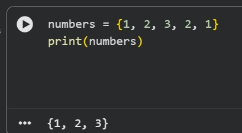
numbers = {10, 20, 20, 30, 30, 30}
print(numbers){10, 20, 30}Adding and removing
add() inserts one value; adding one that’s already there changes nothing.
colors = {"Red", "Green"}
colors.add("Blue")
print(colors)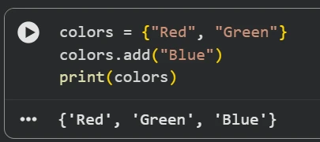
remove(value)
Removes it. Error (KeyError) if it’s missing.
discard(value)
Removes it. Quietly does nothing if it’s missing: the safer choice when unsure.
colors = {"Red", "Green", "Blue"}
colors.remove("Green")
print(colors)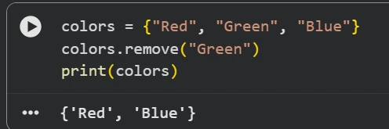
colors.discard("Pink") # not there: no error
print(colors){'Red', 'Blue'}Membership testing
colors = {"Red", "Green", "Blue"}
print("Red" in colors)
print("Yellow" in colors)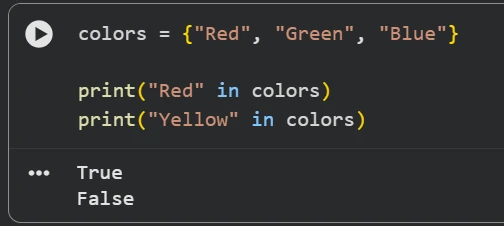
Union, intersection and difference
Sets come from mathematics, so you can combine them like a Venn diagram:
set_a = {1, 2, 3, 4}
set_b = {3, 4, 5, 6}
print(set_a | set_b) # union: everything from both
print(set_a & set_b) # intersection: only what's in both
print(set_a - set_b) # difference: in a but not in b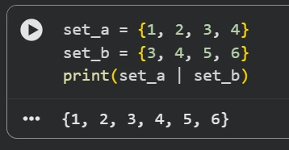
|: all values, no duplicates.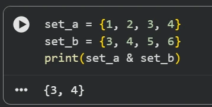
&: only values in both.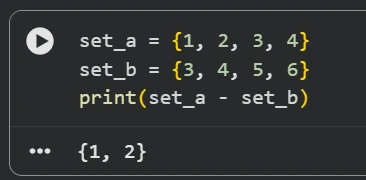
-: in the first set, not the second.set_b - set_a would be {5, 6}.Real-world practice
hashtags = {"Python", "AI", "Python", "Coding", "AI", "DevOps"} # repeated tags
print(hashtags)
access_levels = {"Entry", "Parking", "Cafeteria"} # building security
access_levels.add("Server Room")
access_levels.remove("Parking")
access_levels.discard("Gym")
print(access_levels){'DevOps', 'Coding', 'Python', 'AI'}
{'Cafeteria', 'Entry', 'Server Room'}workshop_a = {101, 102, 103, 104} # registration IDs
workshop_b = {103, 104, 105, 106}
print("All participants:", workshop_a | workshop_b)
print("Both workshops:", workshop_a & workshop_b)
print("Only Workshop A:", workshop_a - workshop_b)
categories = {"Science", "Technology", "Mathematics", "Literature"} # a digital library
print("Science" in categories)
print("History" in categories)All participants: {101, 102, 103, 104, 105, 106}
Both workshops: {104, 103}
Only Workshop A: {101, 102}
True
False(Yes, {104, 103} really prints in that order: sets don’t sort.)
List vs tuple vs set vs dictionary
| List | Tuple | Set | Dictionary | |
|---|---|---|---|---|
| Brackets | [ ] | ( ) | { } (empty: set()) | {key: value} (empty: {}) |
| Ordered? | Yes | Yes | No | Keeps insertion order |
| Changeable? | Yes (mutable) | No (immutable) | Yes: add/remove items | Yes |
| Duplicates? | Allowed | Allowed | Removed automatically | Keys unique; values may repeat |
| Access | lst[0] | tpl[0] | only in / loop | d["key"] |
| Use it for | a group of similar items that changes | fixed records: coordinates, RGB | uniqueness, set maths | labelled fields, lookups |
Nested data structures
Real data is rarely flat. Each of the four structures can hold other structures inside it, and the rule for reaching deep inside is simple: work from the outside in, one [ ] per level.
Lists inside lists
A grid (seating plan, tic-tac-toe board) is a list of rows:
matrix = [
[1, 2, 3], # row 0
[4, 5, 6], # row 1
[7, 8, 9] # row 2
]
print(matrix[1]) # the whole second row
print(matrix[1][2]) # second row, third column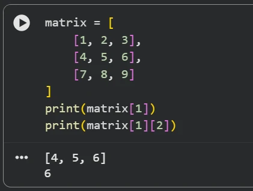
Dictionaries inside dictionaries
Many students, each identified by roll number, with their details grouped underneath:
students = {
"101": {"name": "Rahul", "age": 21},
"102": {"name": "Priya", "age": 22}
}
print(students["101"]["name"])The value for each key is itself a dictionary. To reach an inner value, you chain the keys:
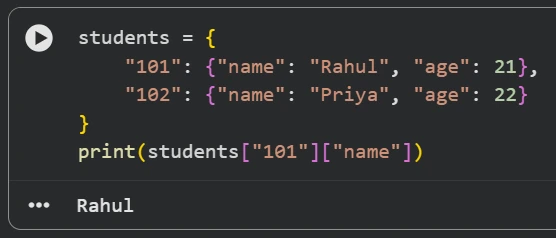
"101", then inner key "name".Lists inside dictionaries
One key holding several values, like a student’s marks across subjects:
student = {
"name": "Rahul",
"marks": [85, 90, 78]
}
print(student["marks"])
print(student["marks"][1])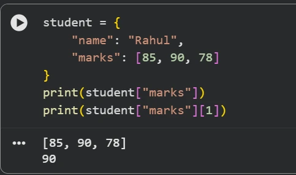
Dictionaries inside lists
One of the most common real-world patterns: a list of records, each record a dictionary. It finally solves the opening problem of storing many students:
students = [
{"name": "Rahul", "age": 21},
{"name": "Priya", "age": 22},
{"name": "Amit", "age": 23}
]
print(students[0])
print(students[0]["name"])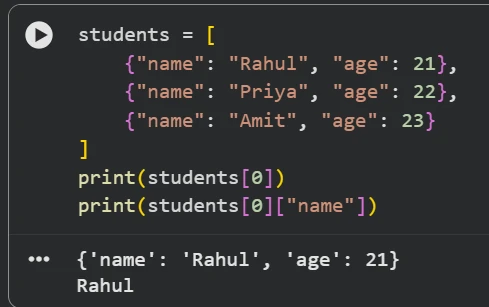
Reaching deep inside
students = [
{"name": "Rahul", "marks": [85, 90, 78]},
{"name": "Priya", "marks": [88, 76, 95]}
]
print(students[1]["marks"][2])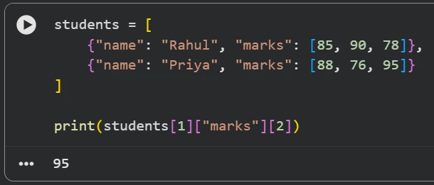
[1]: list index, picks Priya’s record (a dictionary)
["marks"]: dictionary key, picks her marks list [88, 76, 95]
[2]: list index, picks the third mark, 95
Real-world practice
Cinema booking: book row 1, seat 2, then count the free seats with a nested loop.
seats = [
["Available", "Available", "Booked"],
["Booked", "Available", "Available"],
["Available", "Booked", "Available"]
]
seats[0][1] = "Booked"
available = 0
for row in seats:
for seat in row:
if seat == "Available":
available += 1
print(seats)
print("Available seats:", available)[['Available', 'Booked', 'Booked'], ['Booked', 'Available', 'Available'], ['Available', 'Booked', 'Available']]
Available seats: 5Employee records: change employee 102’s department and add a new field.
employees = {
101: {"name": "Rahul", "department": "IT"},
102: {"name": "Priya", "department": "HR"},
103: {"name": "Amit", "department": "Finance"}
}
employees[102]["department"] = "Marketing"
employees[102]["experience"] = 3
print(employees){101: {'name': 'Rahul', 'department': 'IT'}, 102: {'name': 'Priya', 'department': 'Marketing', 'experience': 3}, 103: {'name': 'Amit', 'department': 'Finance'}}Fitness app: add today’s steps and total them.
user = {
"name": "Rahul",
"steps": [6500, 8200, 9100, 7500]
}
user["steps"].append(8800)
total_steps = sum(user["steps"])
print("Steps:", user["steps"])
print("Total steps:", total_steps)Steps: [6500, 8200, 9100, 7500, 8800]
Total steps: 40100Hotel guests: move the second guest to room 220 and mark them checked in.
guests = [
{"name": "Rahul", "room": 101},
{"name": "Priya", "room": 205},
{"name": "Amit", "room": 310}
]
guests[1]["room"] = 220
guests[1]["checked_in"] = True
print(guests)[{'name': 'Rahul', 'room': 101}, {'name': 'Priya', 'room': 220, 'checked_in': True}, {'name': 'Amit', 'room': 310}]data[i]["field"] and nested loops is day-one FDE work.Slicing lists
Indexing gives one value; slicing gives a range of values. It works on lists (and tuples) exactly as you learned for strings: sequence[start:stop:step], with start included and stop excluded, the same rule as range().
numbers = [10, 20, 30, 40, 50]
print(numbers[1:4])Visually:
start:stop
sequence[start:stop]This returns items from index start up to, but not including, index stop:
numbers = [10, 20, 30, 40, 50]
print(numbers[1:3])Leaving start or stop empty
Leaving start or stop empty fills in a sensible default:
numbers = [10, 20, 30, 40, 50]
print(numbers[1:3])
print(numbers[:3]) # start defaults to the beginning
print(numbers[2:]) # stop defaults to the end
print(numbers[:]) # a full copy of the liststart:stop:step
A third value controls the step: how many positions to move each time, exactly like the step in range().
sequence[start:stop:step]numbers = [10, 20, 30, 40, 50, 60]
print(numbers[0:6:2]) # every second elementVisually:
numbers[::2].)Positive and negative steps
A positive step moves forward through the sequence; a negative step moves backward.
numbers = [10, 20, 30, 40, 50]
print(numbers[::-1]) # the standard way to reversenumbers[::-1] is a very common idiom: with start and stop left empty and step -1, it walks the whole sequence back to front. That is why it’s the standard way to reverse a list or a string:
word = "Python"
print(word[::-1])Splitting data into chunks
scores = [55, 62, 71, 85, 90, 45, 30]
top_half = scores[:4]
bottom_half = scores[4:]
print(top_half)
print(bottom_half)Slicing creates a new list
original = [1, 2, 3, 4, 5]
copy = original[1:4]
copy[0] = 99
print(original)
print(copy)original is untouched.Changing copy left original untouched, because the slice built a brand-new list.
b = a is not a copy Plain assignment only adds a second name tag to the same list (remember Part 1). After a = [1, 2, 3], b = a, b[0] = 99, printing a gives [99, 2, 3]. Use a[:] when you want an independent copy.Real-world practice
config = ["Production", "Asia", 8080, True] # back up a config before editing
backup = config[:]
backup[2] = 9090
print("Original:", config)
print("Backup:", backup)
temperatures = [24, 25, 26, 28, 29, 30, 31, 29, 27, 26] # hourly readings
selected = temperatures[0::2] # every 2 hours
average = sum(selected) / len(selected)
print("Selected readings:", selected)
print("Average:", average)Original: ['Production', 'Asia', 8080, True]
Backup: ['Production', 'Asia', 9090, True]
Selected readings: [24, 26, 29, 31, 27]
Average: 27.4sales = [12000, 15000, 18000, 14000, 21000, 19000,
22000, 25000, 23000, 27000, 30000, 28000] # 12 months
first_half = sales[:6]
total = sum(first_half)
print("First half sales:", first_half)
print("Total:", total)
employees = ["Rahul", "Priya", "Amit", "Sneha", "Ravi", "Neha"]
morning_shift = employees[:3] # first three
morning_shift.append("Kiran")
print("All employees:", employees)
print("Morning shift:", morning_shift)First half sales: [12000, 15000, 18000, 14000, 21000, 19000]
Total: 99000
All employees: ['Rahul', 'Priya', 'Amit', 'Sneha', 'Ravi', 'Neha']
Morning shift: ['Rahul', 'Priya', 'Amit', 'Kiran']Adding Kiran to morning_shift didn’t touch employees: the slice is its own list.
List comprehensions
A situation that comes up constantly: you have a collection and want to build a new one from it: add grace marks to every student’s marks, keep only the marks above the passing score, turn every name into capital letters, create a dictionary of each student and their result. Python has a short, clean way to do this: comprehensions.
Why: the loop-and-append pattern
The teacher decides to give 5 grace marks to every student, and you need a new list where every mark is increased by 5. Let’s try to solve the problem with what you already know: an empty list, a loop and append():
marks = [85, 72, 91, 68, 79]
new_marks = []
for mark in marks:
new_marks.append(mark + 5)
print(new_marks)Three steps for a simple idea. A list comprehension writes the same thing in one line:
marks = [85, 72, 91, 68, 79]
new_marks = [mark + 5 for mark in marks]
print(new_marks)No empty list, no append(): Python builds the list for you.
Syntax
A list comprehension is written inside square brackets because the result is a list.
[expression for item in iterable]expression: what goes into the new list
each item, one at a time
the original collection being looped through
Read it like English: “give me mark + 5, for every mark in marks.” The square brackets tell you the result is a list. A comprehension never changes the original; it always creates a new list:
marks = [85, 72, 91, 68, 79]
new_marks = [mark + 5 for mark in marks]
print(marks)
print(new_marks)| mark | expression | goes into new list |
|---|---|---|
| 85 | 85 + 5 | 90 |
| 72 | 72 + 5 | 77 |
| 91 | 91 + 5 | 96 |
| 68 | 68 + 5 | 73 |
| 79 | 79 + 5 | 84 |
Visually:
Same number of items, same order, each one transformed.
More expressions
The expression can be anything that gives a value. Squares of numbers from 1 to 5, looping through range():
squares = [n * n for n in range(1, 6)]
print(squares)Changing strings: suppose you have student names in small letters and want them in capital letters:
students = ["rahul", "priya", "amit"]
upper_names = [name.upper() for name in students]
print(upper_names)Getting information from each item: the expression doesn’t have to change the item; it can find something about it, like the number of letters in each name:
students = ["Rahul", "Priya", "Amit"]
name_lengths = [len(name) for name in students]
print(name_lengths)Whatever you write before for is what goes into the new list.
Adding a condition: filtering
Now the teacher only wants marks of 75 or more. With a loop you need an if inside:
marks = [85, 72, 91, 68, 79]
high_marks = []
for mark in marks:
if mark >= 75:
high_marks.append(mark)
print(high_marks)In a comprehension, put the if at the end:
[expression for item in iterable if condition]if at the end is the filter.marks = [85, 72, 91, 68, 79]
high_marks = [mark for mark in marks if mark >= 75]
print(high_marks)Visually:
The new list is shorter: 72 and 68 were skipped because the condition was False for them.
More filtering examples. Even numbers from 1 to 10:
evens = [n for n in range(1, 11) if n % 2 == 0]
print(evens)Names that have more than 4 letters:
students = ["Rahul", "Priya", "Amit", "Sneha", "Ravi"]
long_names = [name for name in students if len(name) > 4]
print(long_names)Filter and change at the same time: grace marks only for students below 75:
marks = [85, 72, 91, 68, 79]
low_marks_with_grace = [mark + 5 for mark in marks if mark < 75]
print(low_marks_with_grace)if-else inside a comprehension
Sometimes you don’t skip anything; you choose one value or another for every item. “Pass” for 75 or more, otherwise “Fail”:
[value_if_true if condition else value_if_false for item in iterable]marks = [85, 72, 91, 68, 79]
results = ["Pass" if mark >= 75 else "Fail" for mark in marks]
print(results)Visually:
if AFTER for → filter
[mark for mark in marks if mark >= 75]
Decides whether an item goes in. Some items are skipped; the list can be shorter.
if-else BEFORE for → choose
["Pass" if mark >= 75 else "Fail" for mark in marks]
Decides which value goes in. Nothing is skipped; same length.
[x for x in xs if c else y] is a SyntaxError: an else only works in the before-for position.Dictionary comprehensions, and when to use comprehensions
The same one-line idea builds a dictionary. Two differences: curly braces { }, and each item produces a key: value pair.
{key: value for item in iterable}key: value pair per item.From a list
Each student’s name as the key, and the number of letters in the name as the value:
students = ["Rahul", "Priya", "Amit"]
name_lengths = {name: len(name) for name in students}
print(name_lengths)Visually:
name and the value is len(name).Numbers and their squares:
squares = {n: n * n for n in range(1, 6)}
print(squares)Now you can look up the square of any number directly: squares[4] gives 16.
Combining two lists into a dictionary
Names and marks sit in two lists, in the same order. Loop through the positions with range(len(students)):
students = ["Rahul", "Priya", "Amit"]
marks = [85, 72, 91]
report = {students[i]: marks[i] for i in range(len(students))}
print(report)| i | key | value | pair |
|---|---|---|---|
| 0 | students[0] | marks[0] | "Rahul": 85 |
| 1 | students[1] | marks[1] | "Priya": 72 |
| 2 | students[2] | marks[2] | "Amit": 91 |
dict(zip(students, marks)) builds the same dictionary by pairing the two lists directly.From an existing dictionary, using items()
Very often you build a new dictionary from an existing one. items() gives the keys and values together, so you can loop through both at once.
Changing every value: grace marks again, but stored in a dictionary:
marks = {"Rahul": 85, "Priya": 72, "Amit": 91, "Sneha": 68}
new_marks = {name: mark + 5 for name, mark in marks.items()}
print(new_marks)Filtering a dictionary: only the toppers, students with 75 or more:
marks = {"Rahul": 85, "Priya": 72, "Amit": 91, "Sneha": 68}
toppers = {name: mark for name, mark in marks.items() if mark >= 75}
print(toppers)Visually:
Using if-else in a dictionary comprehension: the Pass/Fail result for every student:
marks = {"Rahul": 85, "Priya": 72, "Amit": 91, "Sneha": 68}
results = {name: "Pass" if mark >= 75 else "Fail" for name, mark in marks.items()}
print(results)Now you can directly ask results["Priya"] and get "Fail": exactly the kind of lookup dictionaries are made for.
When should you use a comprehension?
Use a comprehension when…
you’re building a new list or dictionary from an existing collection; each item needs a simple change or a simple condition; the whole idea fits comfortably on one line.
Use a normal loop when…
each item needs several steps; you want to print or do something other than build a collection; the comprehension is getting hard to read.
This works, but is hard to understand at a glance:
grades = ["A" if m >= 90 else "B" if m >= 75 else "C" if m >= 60 else "D" for m in marks]A normal loop with if/elif/else would be much clearer. The goal is always readable code, not the shortest code.
To summarise:
key: value build a dictionary.| Pattern | Builds |
|---|---|
[expression for item in iterable] | a new list |
[expression for item in iterable if condition] | a new list, filtered |
[a if condition else b for item in iterable] | a new list, a or b for each item |
{key: value for item in iterable} | a new dictionary |
{k: v for k, v in dictionary.items() if cond} | a new dictionary, filtered |
Key terms
- Data structure
- A way of storing several values together in one variable; Python’s built-in ones are list, tuple, dictionary and set.
- List
- An ordered, changeable collection written with square brackets, like
[85, 72, 91]; items are accessed by index. - Mutable
- Can be changed after creation; lists, dictionaries and sets are mutable.
- append() / insert()
- List methods that add an item at the end, or at a given index while shifting later items right.
- pop()
- Removes and returns an item: from a list by index (the last one by default), from a dictionary by key.
- Tuple
- An ordered, immutable collection written with parentheses, like
(10, 20); a one-item tuple needs a trailing comma. - Tuple unpacking
- Assigning a tuple’s values to several variables in one line, matched by position:
name, age = ("Rahul", 21). - Dictionary
- A collection of key-value pairs written as
{"name": "Rahul"}; values are looked up by key, and keys are unique. - KeyError
- The error raised when you read a dictionary key that doesn’t exist (or
remove()a missing set item); avoid it withinor.get(). - items()
- A dictionary method giving (key, value) pairs, typically unpacked in
for key, value in d.items(). - Set
- An unordered collection of unique values written with braces, like
{1, 2, 3}; an empty set isset(), not{}. - Union / intersection / difference
- Set operations
|,&,-: everything in either set, only what’s in both, and what’s in the first but not the second. - Nested data structure
- A collection inside another, like a list of dictionaries, accessed from the outside in with one
[ ]per level. - List comprehension
- A one-line way to build a new list from an iterable:
[expr for item in iterable if condition]. - Dictionary comprehension
- A one-line way to build a new dictionary:
{key: value for item in iterable}.
Self-check
Pick an answer. You’ll see right away whether it’s correct and why.
marks = [85, 72, 91, 68, 79]. What is marks[-2]?
- 72
- 79
- 68
- An IndexError
-1 is the last item (79), so -2 is the one before it, 68.
Which line creates a tuple containing just the number 5?
t = (5,)t = (5)t = [5]t = {5}
The comma makes the tuple. (5) is just the integer 5; [5] is a list and {5} a set.
What does type({}) return?
<class 'set'><class 'tuple'><class 'list'><class 'dict'>
Empty braces make an empty dictionary. An empty set must be written set().
You need to store GPS coordinates that must never change by accident. Best choice?
- List
- Tuple
- Set
- Dictionary
A tuple is ordered and immutable, perfect for a fixed pair like (latitude, longitude).
d = {"name": "Asha"}. What does d["age"] do?
- Returns
None - Returns 0
- Raises
KeyError - Adds the key "age"
Reading a missing key raises KeyError. d.get("age") would return None instead; assigning d["age"] = … would add it.
What is {1, 2, 3} & {2, 3, 4}?
{2, 3}{1, 2, 3, 4}{1}{4}
& is intersection: only the values in both sets.
data = [{"name": "Ravi", "marks": [70, 80]}]. How do you get 80?
data["marks"][1]data[0][1]data[1]["marks"]data[0]["marks"][1]
Outside in: [0] picks the dict from the list, ["marks"] the list from the dict, [1] the second mark.
What does [n for n in [3, 8, 5, 10] if n > 4] produce?
[True, True, True][8, 5, 10][3][8, 10]
The trailing if filters: only items where n > 4 are kept, in their original order.
a = [1, 2, 3]; b = a[:]; b[0] = 99. What is a?
[99, 2, 3][99][1, 2, 3]- An error
a[:] makes a new list, so changing b leaves a alone. (With b = a it would have changed.)
All of it, in one sentence
Use a list for an ordered group you’ll change, a tuple for fixed records, a dictionary to look values up by meaningful keys, and a set for unique values and Venn-style maths; nest them to model real records, slice to take portions, and use comprehensions to build new collections in one readable line.
— Vishwa Mohan